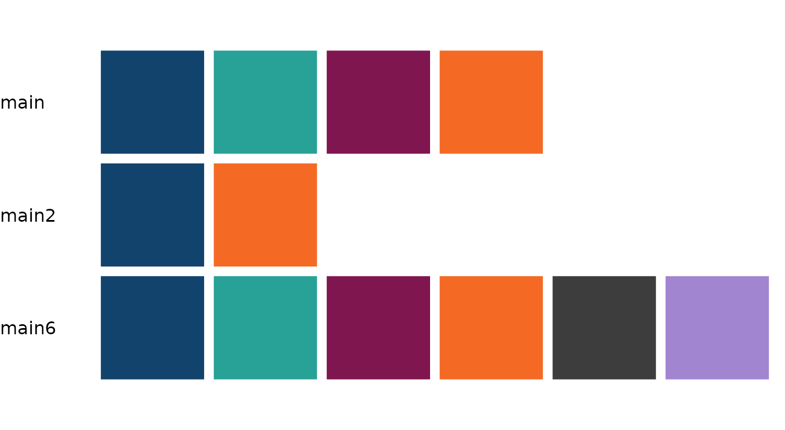
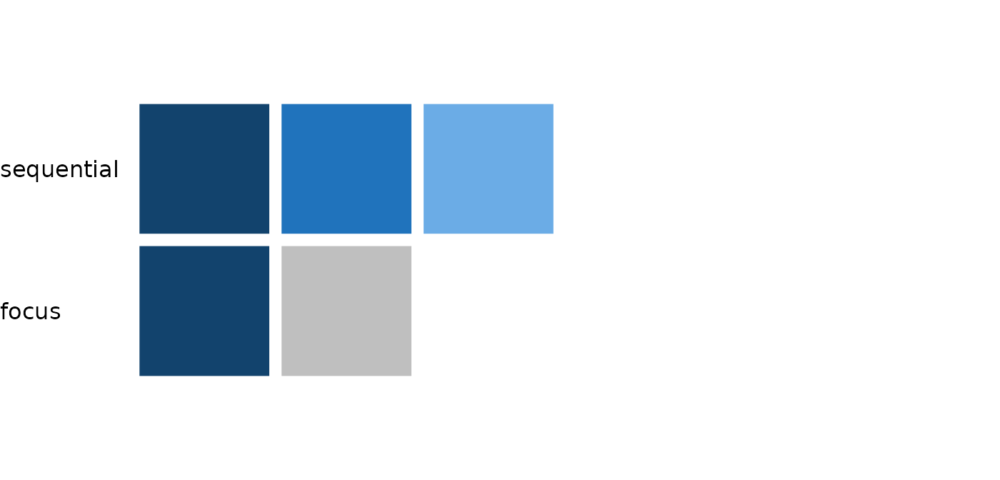

sgplot uses colour palettes from the Government Analysis
Function Data
visualisation: colours guidance. This guidance contains lots of
information on best practice for using colour and how to ensure content
meets the accessibility
legislation applicable to the public sector. sgplot
should be used in conjunction with this guidance.
The following are a few key considerations when using colour in plots:
- Only use colour if absolutely necessary
- Limit the number of different colours you use; ideally an absolute maximum of four
- Use colour consistently when producing a series of plots
- Do not rely on colour alone to convey a message
Main Palettes
There are three palettes available for use with categorical data:

mainis the default palette for discrete colour scales.main2should be used if only two colours are required as the dark blue and orange colours have the best colour contrast. If only two colour are required and another palette is used, a warning message will appear to advise you usemain2.main6is also available to use, however it should be avoided where possible, as it’s generally considered that use of four or more colours in a plot is excessive. Plot redesign should be considered where possible andmain6used as a last resort.
Other Palettes
There are two other colour palettes available:

sequentialshould be used for data where the order has some meaning. Note that not all colours in this palette have sufficient colour contrast against a white background or with each other. The Analysis Function colour guidance has some specific advice for using the sequential palette which should be considered.focusshould be used to highlight specific elements of a plot. The light grey colour in this palette does not have sufficient colour contrast against a white background and therefore this palette should only be used when it is essential to communicate your message. The Analysis Function colour guidance has some advice for using the focus palette which should be considered.
Viewing Palettes in R
Names and hex codes for available colours and palettes can be viewed by running the following code:
# View names and hex codes for all colours
sgplot::sg_colour_values
# View names and hex codes for all colour palettes
sgplot::sg_colour_palettes
# View names and hex codes for `main` colour palette
sgplot::sg_colour_palettes[["main"]]